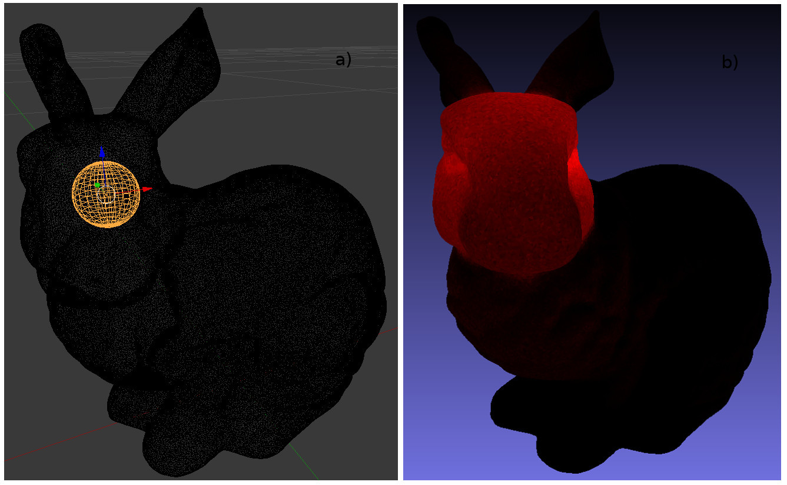

Mesh Observers¶
In this example we demonstrate two different types of observations on a mesh surface. The first case measures the total power arriving on a mesh surface. The second case treats each triangle in a mesh as an observing pixel and saves the resulting power on the mesh to a vtk data file for later visualisation in paraview.
import csv
import os
from math import pi
from raysect.core import translate, rotate_x
from raysect.primitive import Sphere, import_obj, export_vtk
from raysect.optical import World
from raysect.optical.observer import MeshPixel, MeshCamera, PowerPipeline0D, PowerPipeline1D, MonoAdaptiveSampler1D
from raysect.optical.material import AbsorbingSurface
from raysect.optical.material.emitter import UnityVolumeEmitter
def write_results(basename, camera, mesh):
# obtain frame from pipeline
frame = camera.pipelines[0].frame
# calculate power density
power_density = frame.mean / camera.collection_areas
error = frame.errors() / camera.collection_areas
# write as csv
with open(basename + '.csv', 'w', newline='') as f:
writer = csv.writer(f)
writer.writerow(('Triangle Index', 'Power Density / Wm-2', 'Error / Wm-2'))
for index in range(frame.length):
writer.writerow((index, power_density[index], error[index]))
triangle_data = {'PowerDensity': power_density, 'PowerDensityError': error}
export_vtk(mesh, basename + '.vtk', triangle_data=triangle_data)
samples = 1000000
sphere_radius = 0.01
min_wl = 400
max_wl = 401
# set-up scenegraph
world = World()
emitter = Sphere(radius=sphere_radius, parent=world, transform=rotate_x(-90)*translate(-0.05409, -0.01264, 0.10064))
base_path = os.path.split(os.path.realpath(__file__))[0]
mesh = import_obj(os.path.join(base_path, "../resources/stanford_bunny.obj"),
material=AbsorbingSurface(), parent=world, flip_normals=True)
power = PowerPipeline0D(accumulate=False)
observer = MeshPixel(mesh, pipelines=[power], parent=world,
min_wavelength=min_wl, max_wavelength=max_wl,
spectral_bins=1, pixel_samples=samples, surface_offset=1E-6)
print("Starting observations with volume emitter...")
calculated_volume_emission = 16 / 3 * pi**2 * sphere_radius**3 * (max_wl - min_wl)
emitter.material = UnityVolumeEmitter()
observer.observe()
measured_volume_emission = power.value.mean
measured_volume_error = power.value.error()
print()
print('Expected volume emission => {} W'.format(calculated_volume_emission))
print('Measured volume emission => {} +/- {} W'.format(measured_volume_emission, measured_volume_error))
power = PowerPipeline1D()
sampler = MonoAdaptiveSampler1D(power, fraction=0.2, ratio=25.0, min_samples=1000, cutoff=0.1)
camera = MeshCamera(
mesh,
surface_offset=1e-6, # launch rays 1mm off surface to avoid intersection with absorbing mesh
pipelines=[power],
frame_sampler=sampler,
parent=world,
spectral_bins=1,
min_wavelength=400,
max_wavelength=401,
pixel_samples=250
)
# render
print('Observing the bunny Mesh...')
output_basename = "bunny_power"
render_pass = 0
while (not camera.render_complete) and (render_pass < 500):
render_pass += 1
print('Render pass {}:'.format(render_pass))
camera.observe()
write_results(output_basename, camera, mesh)
print('Observation complete!')
# export final data as csv
write_results(output_basename, camera, mesh)

a) The position of the emitting sphere inside the bunny mesh. b) A visualisation of the resulting power measured on the mesh surface.¶
This figure and calculation has been reproduced from Carr, M., Meakins, A., et al. “Description of complex viewing geometries of fusion tomography diagnostics by ray-tracing.” Review of Scientific Instruments 89.8 (2018): 083506.